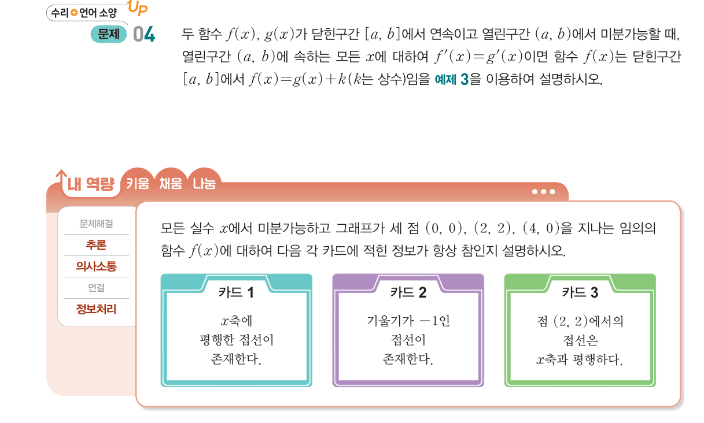
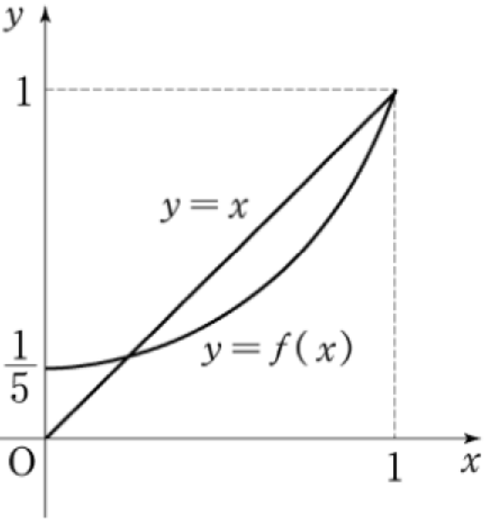

2026학년도 2학기 | 미적분 I
함수 \(f(x) = -\dfrac{1}{3}x^2 + 12\)의 그래프 위의 두 점 \(\mathrm{A}(-3, 9)\), \(\mathrm{B}(3, 9)\)을 잇는 직선을 생각하자. 직선 \(\mathrm{AB}\)의 기울기는 \(\dfrac{9 - 9}{3 - (-3)} = 0\)이다.
[개방형 발문] 직선 \(\mathrm{AB}\)와 평행한 (즉, 기울기가 \(0\)인) 접선이 곡선 \(y = f(x)\) 위 어딘가에 반드시 존재할까? 존재한다면 그 접점의 \(x\)좌표는 어디일까?
[연결] 그래프를 그려 보면 정점 \((0, 12)\)에서 \(f'(0) = 0\) — 기울기 \(0\)인 접선이 정확히 존재한다. 이 단순한 관찰을 일반화한 것이 오늘의 두 정리: 롤의 정리(\(f(a)=f(b)\)일 때 \(f'(c)=0\)인 \(c\)가 존재) → 평균값 정리(\(f(a)=f(b)\) 조건을 떼면 \(f'(c) = \dfrac{f(b)-f(a)}{b-a}\)가 됨).
함수 \(f(x)\)가 닫힌구간 \([a, b]\)에서 연속이고 열린구간 \((a, b)\)에서 미분가능하며 \(f(a) = f(b)\)이면, 다음을 만족시키는 \(c\)가 적어도 하나 존재한다.
\( f'(c) = \) \( 0 \), \( c \in (a, b) \)
기하학적 의미: 양 끝의 함숫값이 같으면 그 사이 어딘가에서 \(x\)축에 평행한 접선이 존재한다. 세 가지 조건(연속·미분가능·\(f(a)=f(b)\))이 모두 갖춰져야 한다. (비상 미적분 I P.73~74 · 롤의 정리 참고)
조건 한 가지라도 빠지면 결론(존재성)이 보장되지 않는다.
핵심: 정리를 적용하기 전에 "세 조건을 모두 확인"하는 습관. (비상 미적분 I P.75 · 본문 옆 활동 + \(f(x)=|x|\) 반례 참고)
함수 \(f(x)\)가 닫힌구간 \([a, b]\)에서 연속이고 열린구간 \((a, b)\)에서 미분가능할 때, 다음을 만족시키는 \(c\)가 적어도 하나 존재한다.
\( \dfrac{f(b) - f(a)}{b - a} = \) \( f'(c) \), \( c \in (a, b) \)
기하학적 의미: 두 점 \((a, f(a))\), \((b, f(b))\)를 잇는 평균 변화율(= 직선 \(\mathrm{AB}\)의 기울기)과 같은 순간 변화율(= 접선의 기울기)을 갖는 점 \(c\)가 구간 안에 존재한다.
롤의 정리와의 관계: 평균값 정리에서 \(f(a) = f(b)\)인 특수 경우가 롤의 정리. 즉 롤 \(\subset\) 평균값의 일반화 구조. (비상 미적분 I P.75~76 · 평균값 정리 참고)
"상수함수의 도함수는 \(0\)"은 자명. 그 역도 참인가? 평균값 정리로 증명한다.
주장: \(f(x)\)가 \([a, b]\)에서 연속이고 \((a, b)\)에서 미분가능하며, \((a, b)\)의 모든 \(x\)에 대해 \(f'(x) = 0\)이면, \(f(x)\)는 \([a, b]\)에서 상수함수이다.
증명: 임의의 \(a \lt x \leq b\)에 대해 평균값 정리를 \([a, x]\)에 적용 \(\Rightarrow\) \(\dfrac{f(x) - f(a)}{x - a} = f'(c)\)인 \(c \in (a, x)\) 존재. 가정에서 \(f'(c) = 0 \Rightarrow f(x) = f(a)\). 모든 \(x\)에 대해 같으므로 상수함수. \(\blacksquare\)
따름정리: 같은 구간에서 \(f'(x) = g'(x)\)이면 \(f(x) = g(x) + k\) (상수 \(k\)). 부정적분(차시 22)의 모든 일반해가 "\(+ C\)"를 갖는 이유의 핵심 정당화. (비상 미적분 I P.77 · 예제 3 + 문제 04 참고)
정리의 \(c\)값 직접 계산 — 정의식 그대로
정리의 \(c\)에 추가 조건 / 정리의 응용 (구간 단속, 부등식)
"틀려야 는다!" 평균값 정리의 \(c\) — 존재성 vs 유일성·특정성 혼동

많은 학생이 카드 3을 "\((2, 2)\)가 두 끝점 사이에 있으니 거기서 기울기가 \(0\)일 것"이라고 단정한다. 평균값 정리·롤의 정리는 "어떤 \(c\)가 존재한다"만 보장한다 — 그 \(c\)가 정확히 어디인지·몇 개인지는 알려주지 않는다. 존재성 \(\neq\) 유일성·특정성.
STEP 1 — 카드 1 (참): \(f(0) = f(4) = 0\)이고 \([0, 4]\)에서 연속·미분가능이므로 롤의 정리 \(\Rightarrow\) \(f'(c) = 0\)인 \(c \in (0, 4)\) 존재. \(x\)축 평행 접선이 존재 ✓.
STEP 2 — 카드 2 (참): 구간 \([2, 4]\)에서 \(f(2) = 2\), \(f(4) = 0\). 평균변화율 \(= \dfrac{0 - 2}{4 - 2} = -1\). 평균값 정리 \(\Rightarrow\) \(f'(c) = -1\)인 \(c \in (2, 4)\) 존재. 기울기 \(-1\) 접선 존재 ✓.
STEP 3 — 카드 3 (거짓): 카드 1에서 \(f'(c) = 0\)인 \(c\)의 존재는 보장되지만, 그 \(c\)가 \(2\)인지 다른 값인지는 모른다. 반례: 세 점을 지나면서 \(f'(2) \neq 0\)인 다항함수를 쉽게 만들 수 있다 (예: 적당히 비대칭인 4차 함수). 카드 3은 항상 참은 아니다 ✗.
핵심 통찰: 평균값 정리·롤의 정리는 "어떤 \(c\) ∈ 열린구간"의 존재성만 보장한다. 그 \(c\)가 어디·몇 개·특정 점인지에 대한 정보는 주지 않는다. "존재성 정리"라는 본질을 놓치면 카드 3 같은 함정에 빠진다.
📖 출처: 수능특강 수학Ⅱ · 도함수의 활용 1 · 유제 3 [26009-0077]
난이도 ★★★ (학습지 max+2, 7분) · 핵심: 평균값 정리로 \(f(x) - f(0) = x f'(c)\) 변환 → 부등식 (가)와 (나)의 결합으로 \(2p \leq f'\)의 최솟값
(가) 모든 양의 실수 \(x\)에 대하여 \(f(x) - f(0) \geq 2px\)이다.
(나) \(x \gt 0\)에서 함수 \(f'(x)\)의 최솟값이 \(4\)이다.
핵심: "전 구간 부등식 \(f(x) - f(0) \geq g(x)\)" 형식은 평균값 정리로 \(f'(c)\)에 대한 조건으로 변환 — 차시 13의 표준 응용. 평균값 정리가 "어떤 \(c\)가 존재"라는 정보를 주므로, 임의의 \(x\)에 대해 대응되는 \(c\)를 모두 모으면 \(f'\)의 최솟·최댓값과 직결된다.
📖 출처: 2005학년도 9월 모의평가 수학영역 가형 28번 [4점]
난이도 ★★★ (학습지 max+2, 7분) · 핵심: 평균값 정리를 다항함수의 양 끝점 평균변화율에 직접 적용하여, 도함수 \(f'(c)\)가 특정값을 갖는 \(c\)의 존재를 보장 + 합성함수의 연쇄법칙과 결합
오른쪽 그림은 직선 \(y = x\)와 다항함수 \(y = f(x)\)의 그래프의 일부이다. 모든 실수 \(x\)에 대하여 \(f'(x) \geq 0\)이고 \(f(0) = \dfrac{1}{5}\), \(f(1) = 1\)일 때, <보기>에서 옳은 것을 모두 고른 것은?

< 보 기 >
ㄱ. \(f'(x) = \dfrac{4}{5}\)인 \(x\)가 개구간 \((0,\ 1)\)에 존재한다.
ㄴ. \(\displaystyle\int_0^1 f(x)\,dx + \int_{1/5}^{1} f^{-1}(x)\,dx = 1\) (※ 적분 — 미적분I 2학기 진도, 차시 13에서는 평가 보류)
ㄷ. \(g(x) = (f \circ f)(x)\)일 때, \(g'(x) = 1\)인 \(x\)가 개구간 \((0,\ 1)\)에 존재한다.
핵심: 평균값 정리는 "양 끝점의 평균변화율과 같은 도함수 값을 갖는 점의 존재"를 보장한다. 본 문항은 평균값 정리가 평가원 4점 ㄱㄴㄷ 보기 문제에서 어떻게 단일·합성·적분과 통합되어 출제되는지를 보여주는 대표 사례. 차시 13에서는 ㄱ과 ㄷ을 표적으로 학습하고, ㄴ은 미적분I 2학기 적분 단원 학습 이후 재방문하면 자연스럽다.
스마트폰으로 우측 QR코드를 스캔하여, 아래 3가지 유형 중 하나 이상을 체크하고 통합 서술형으로 작성해 제출한다.